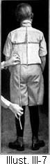

1917—American Dressmaking Step by Step
by Mme. Lydia Trattles Coates
Chapter 3—Body Measurements
Lesson 6—General Instructions for Taking Measurements
There are certain places on every normal woman's body where each measurement starts, and where each measurement ends. The distance between these two points constitutes the correct line over which to measure. To intelligently make the simplest garment with any degree of assurance as to a successful outcome, one must understand where these lines are, what constitutes them, and the exact measurement of them.
- The end of the tape measure where the numbering begins is held in the left hand. In measuring around the body the first two fingers of the left hand are held under the tape measure. This allows for breath and muscle expansion.
- In taking lengthwise measurements the tape measure should fall naturally over the line to be measured. It should not be stretched down nor should it be held too loosely.
- The model should stand correctly with both feet on the floor. She should not inflate her lungs, expand her chest, nor stretch her height. Standing on one foot or in a wearied, drooping position, or resting the weight on one hip changes the lines of the body, and any measurement taken in such a position can not be depended upon for an accurate idea of the correct proportions. A measurement taken in a sitting position differs considerably from a measurement taken in a standing position.
- Stand, never sit, when taking any measurement.
- The following measurements will give an idea of those lines necessary to take for garment making.
Lesson 7—Ladies' Measurements
Skirt
Around body measurements:
- Hips
- Waist-line
- Thigh
Lengthwise measurements:
- Center-front
- Center-back
- Side
- Waist-line to Hip:
- Right
- Left
Waist
Around body measurements:
- Bust
- Waist-line
- Shoulder
- Chest
- Across Back
Lengthwise measurements:
- Center-front
- Neck to Bust-line
- Bustline to Waist-line
- Center-back
- Neck to Shoulder-blade Line
- Shoulder-blade Line to Waist-line
- Side-front
- Shoulder to Tip of Bust
- Tip of Bust to Waist-line
- Side-back
- Shoulder to Shoulder-blade Line
- Shoulder-blade Line to Waist-line
- Underarm
- Arm-scye
- Front
- Back
Sleeves
Around arm measurements:
- Elbow
- Four inches above Elbow
- Four inches below Elbow
- Four inches below Shoulder
- Wrist
- Hand
Lengthwise measurements:
- Shoulder to Elbow
- Elbow to Wrist
- Inside measure
Collars
Around neck measurements:
- Lower Collar-line
- Center-front to Shoulder-line
- Shoulder-line to Center-back
- Upper Collar-line
- Center-front to Ear-line
- Ear-line to Center-back
Lengthwise measurements:
- Center-front
- Center-back
- Side Line
AROUND BODY MEASUREMENTS (Illustrations III-1 and 2)
The Bust Measurement
- Have the model stand as naturally as possible with her arms raised to the level of her shoulders.
- Stand directly back of the model. Pass the tape measure around the body, neither too tight nor too loose.
- Adjust the tape measure straight across the fullest portion of the bust. Then bring it up under the arms and straight across the back covering the ends of the shoulder blades.
Waist-line Measurement
Pass the tape measure as snugly around the waist-line as the belt is desired.
The Shoulder Measurement
Measure the top line of the shoulder from the base of the neck to the end of the shoulder line where the arm begins.
The Chest Measurement
Carry the tape measure from arm socket to arm socket across the chest-line. The chestline is about one-half the distance between the end of the shoulder and the extreme curve under the arm. By turning the arm backward the chestline sinks and becomes very apparent.
The Across Back Measurement
Measure the across back line from arm socket to arm socket. This line is located about one-half the distance between the end of the shoulder and the extreme curve leading to the underarm at the back.
LENGTHWISE MEASUREMENTS (Illustrations III-1 and 2)
Center-front Measurement
- Pin a tape or place a line of pins on the bust and shoulder-blade line. This line is the dividing line of every lengthwise measurement of the waist.
- Measure from the hollow of the throat at the neck-line to the waist-line. Mark this center-front measurement.
- Without moving the tape measure mark the measurements from neck to bustline and from bustline to waist-line.
Center-back Measurement
- Measure from the bone at the back of the neck to the waistline. Mark this center-back measurement.
- Mark the shoulder-blade division. The upper measurement constitutes the neck to shoulder-blade line measurement. The lower measurement is the shoulder-blade line to waist-line measurement.
Side-front Measurement
- Measure from the center of the shoulder to the tip of the bust then downward on a straight line to the waist-line. Mark this side-front measurement.
- Mark the measurements from shoulder to tip of bust and from tip of bust to waist-line.
Side-Back Measurement
- Measure from the center of the shoulder-line downward over the curve of the shoulder blade, then downward on a straight line to the waist-line. Mark this side-back measurement.
- Note the division made by the shoulder-blade line and mark the exact measurements from shoulder to shoulder-blade line and from shoulder-blade line to waist-line.
Underarm Measurement
- Have the model hold her arm out straight on a line with her shoulder.
- Measure from the pit of the arm, but do not place the tape measure deep into the pit of the arm. Bring the tape measure downward on a straight line to the waist-line.
Arm-scye Measurement
- Pass the tape measure snugly around the arm, close to the shoulder and body, adjusting at end of shoulder line.
- Have the model move her arm forward and backward, letting the tape measure slip with the movement, so that the measurement will be large enough to permit perfect freedom in using the arm.
- Mark the complete arm-scye measurement.
- Press the tape measure upward into the pit of the arm. The measurement to the front of the pit of the arm belongs to the front armscye measurement. The measurement to the back of the pit of the arm belongs to the back arm-scye measurement.
ARM MEASUREMENTS (Illustration III-3)
Elbow Measurement
When taking any measurement around the arm, it should be bent as the right arm in the illustration. Measure the arm over the elbow. Hold the first two fingers over the elbow bone and under the tape measure.
To Measure 4 Inches Above the Elbow
Your first two fingers should rest on the arm of the model 4 inches above the elbow. Carry the tape measure around the arm at this point. This measurement should be moderately loose.
To Measure 4 Inches Below the Elbow
Measure exactly the same as above, except that the tape measure is carried 4 inches below the elbow instead of 4 inches above the elbow.
To Measure 4 Inches Below the Shoulder
Pass the tape measure around the thickest portion of the arm, which is usually found about 4 inches below the shoulder. This should also be loose measurement.
Wrist Measurement
Hold the forefinger and middle finger against the bone of the wrist. Measure around the line between the wrist and the hand.
Hand Measurement
The model should hold her thumb under her hand. Measure loosely around the thumb and the hand.
It is necessary to have the hand measure for all sleeves which have no opening or placket at the wrist. One must be able to get the hand through without stretching the bottom of the sleeve.
Lengthwise Arm Measurements
- The arm should be bent so that the thumb rests on the left breast.
- Measure from the top of the shoulder to the elbow and downward to the hand. Note the division at the elbow. The upper measurement is the shoulder to elbow measurement and the lower one is the elbow to wrist measurement.
- The inside arm measurement is found by measuring from the front or inside line of the arm to the wrist, holding the arm straight out.
NECK MEASUREMENTS (Illustration III-3)
Lower Collar-line Measurement
- Pass the tape measure around the neck, covering the bone at the back of the neck and the bone at the hollow of the throat. Draw the tape measure as tight as is comfortable.
- Note the division of the neck measure from the center-front of the neck to the shoulder-line and from the shoulder-line to the center-back.
Upper Collar-line Measurement
- Pass the tape measure close under the chin, ear, and the head at the back of the neck and measure as tight or as loose as desired.
- Note the division of this measurement from the center-front of the neck to the ear-line and from the ear-line to the center-back.
Center-front Collar Measurement
Adjust a tape close under the chin, ear, and the head at the back of the neck. Measure from the top of the tape under the chin to the bone at the hollow of the throat at the neck-line.
Center-back Collar Measurement
Measure from the top of the tape to the bone at the back of the neck.
Side Line Measurement
Measure from the top of the tape and back of the ear downward to the neck at the shoulder-line.
SKIRT MEASUREMENTS (Illustrations III-1 and 2)
Hip Measurement
Pass the tape measure around the body covering the hollow of the hips. Do not take this measure up over the hip joints or down over the thighs. The hip-line can easily be determined by standing and turning the toes inward. Without bending at the waist, bend at the thigh and the hollow becomes very apparent.
Waist-line Measurement (See page 14)
Thigh Measurement
When the thighs are large in proportion to the hips, the thigh measurement should be taken and any necessary alterations should be made, following the same rules as for hip alterations.
Pass the tape measure loosely around the largest part of the thighs.
Center-front Measurement
Measure from the center-front at the waist-line downward entirely to the floor. The number of inches from the floor which the skirt is desired to hang is subtracted from the floor length of the front, back, and side measurements.
Center-back Measurement
Measure from the center-back at the waist-line to the floor.
The Side Measure
Measure from the waist-line, directly under the arm, downward over the hip to the floor. If there is a marked difference in the right and left hips, measure both the right and the left sides.
Height of Hip Measure
Measure from the waist-line downward to the hollow of the hips. This length from waist-line to hips should be measured on both the right and the left sides, as often there is a slight difference in their height.
Lesson 8—Misses', Girls' and Juniors', and Boys' Measurements
MISSES' MEASUREMENTS
Misses' measurements are taken in exactly the same manner as Ladies' measurements are taken. Alterations are made in the same places and the garment handled according to the same rules.
GIRLS' AND JUNIORS' MEASUREMENTS (Illustrations III-4 and 5)
Girls' and Juniors' measurements are taken the same as Ladies measurements with the exception of the bust measurement and the skirt lengths.
Instead of measuring around the bust and dividing the lengthwise measurements by the bustline, measure across the breast and divide all lengthwise measurements by the breast-line. The breast measurement is taken around the body with the tape measure brought close up under the arms.
Instead of measuring the lengthwise measurements to the floor, measure to and from the knee.
BOYS' MEASUREMENTS (Illustrations III-6 and 7)
The Waist Measurement
Boys' measurements for the waist portion are classified and taken exactly the same as Girls' and Juniors'.
Pants Measurements
Around Body:
- Waist-line
- Across Front
- Across Seat
Lengthwise and Center Measurement:
- Center-front
- Waist-line to Crotch
- Crotch to Knee
- Center-back
- Waist-line to Crotch
- Crotch to Knee-line
- Side Line: Waist-line to Knee